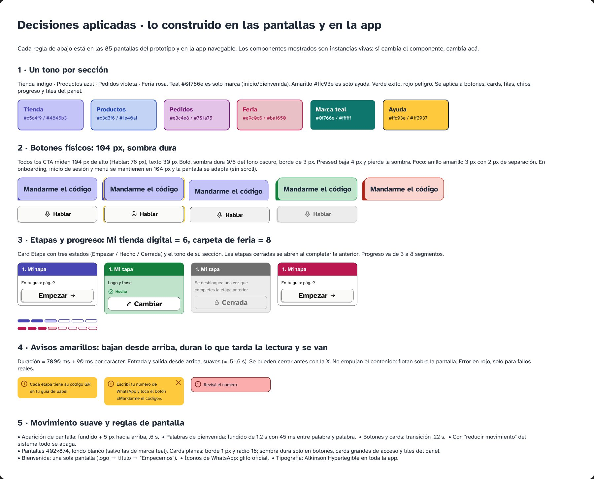
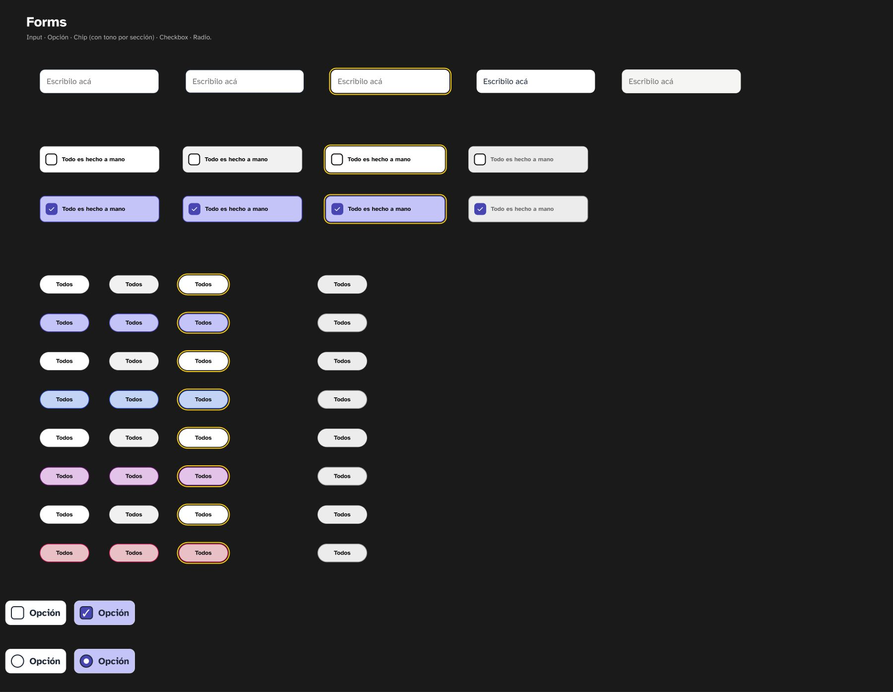
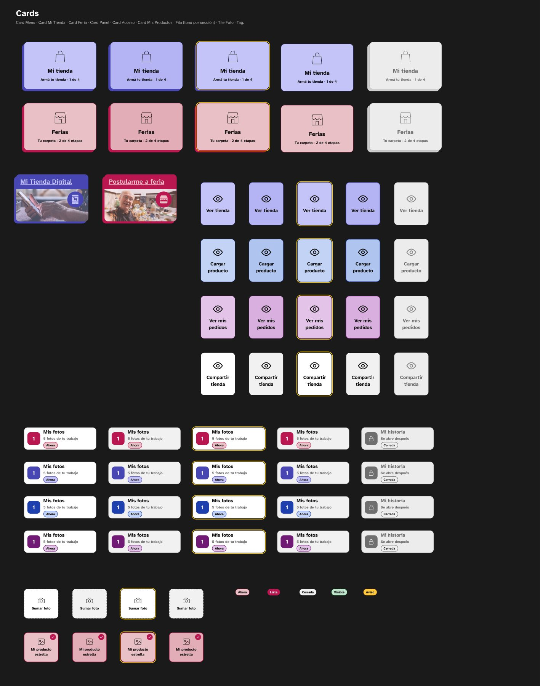
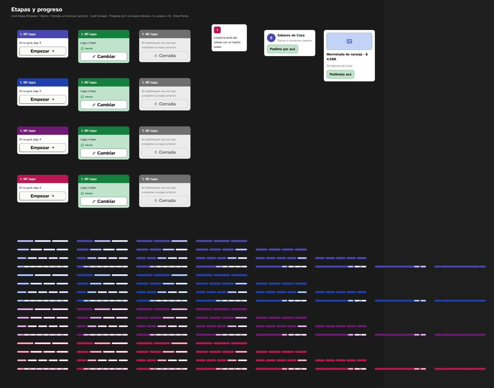
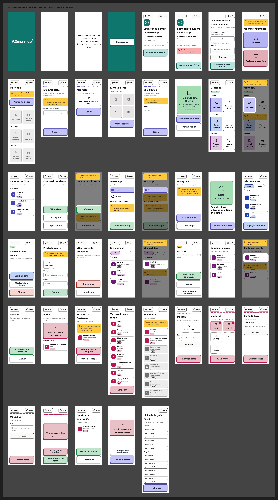
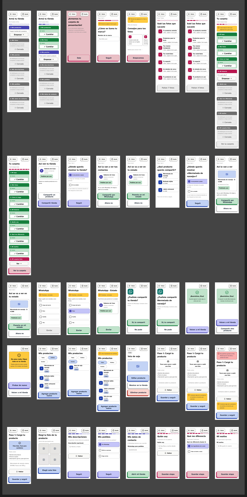

Sistema en Figma
Capturas del archivo de diseño: componentes del sistema (página 01) y las 85 pantallas del prototipo (página 02). Tocá una imagen para verla grande.
Decisiones aplicadas

Botones

Formularios

Cards

Etapas y progreso

Pantallas · flujo simplificado (01–45)

Pantallas · flujo ampliado (46–85)
